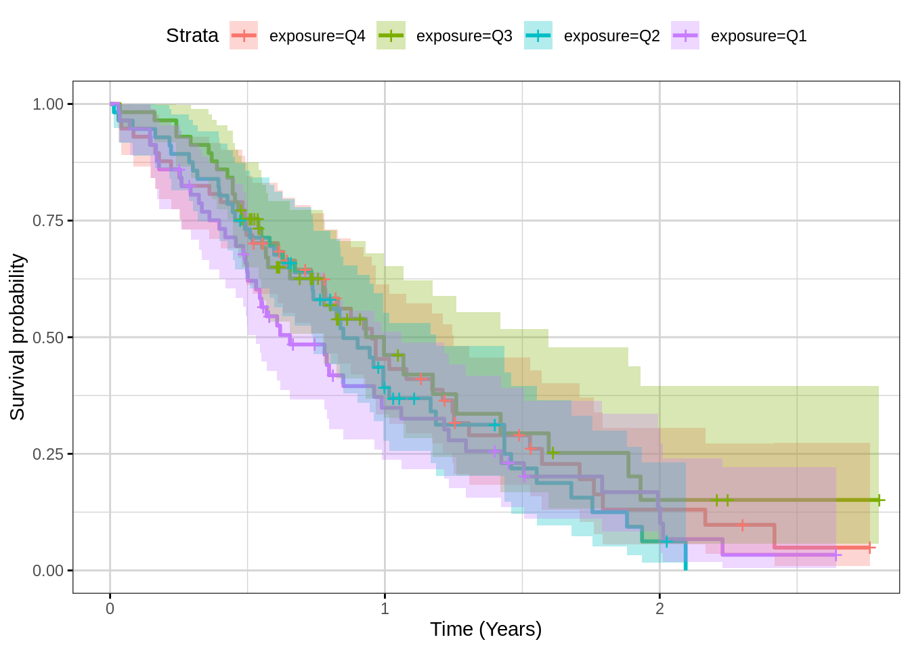
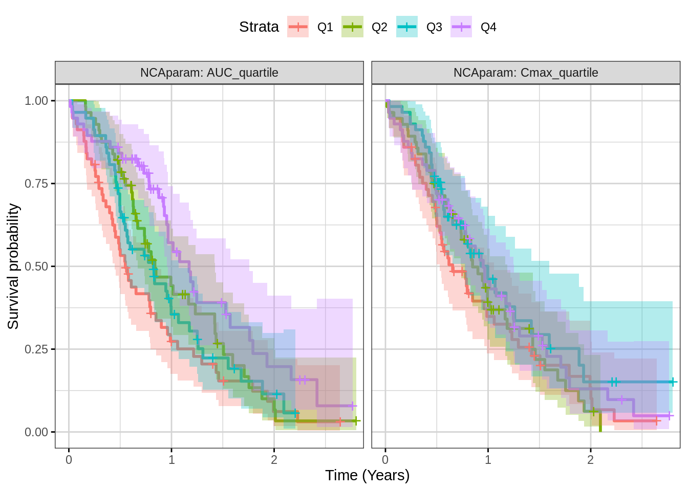
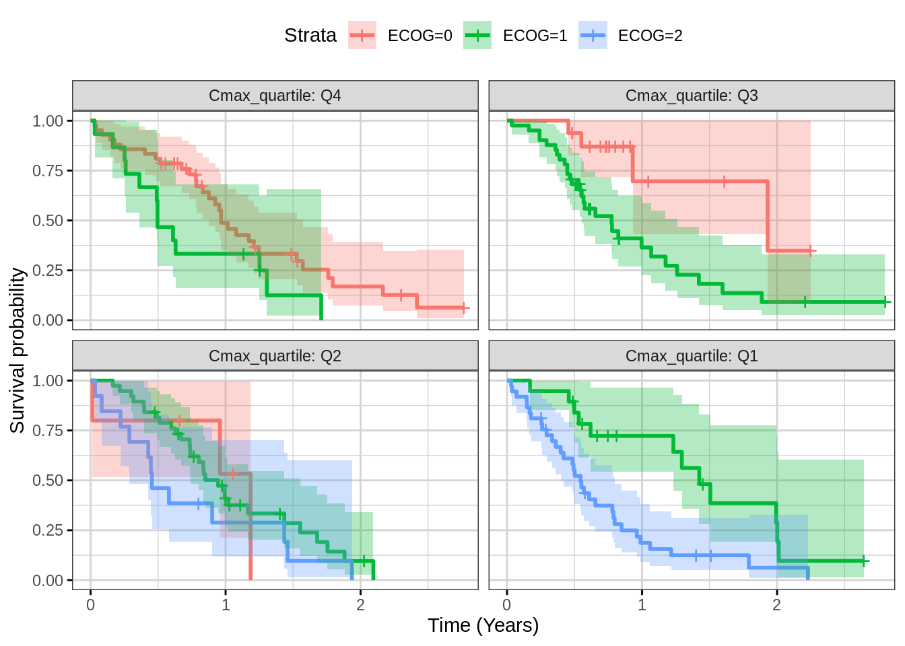

Rmarkdown template to generate this page can be found on Rmarkdown-Template.
#Use the lung dataset to create a fake exposure dataset
km_data <- lung %>%
mutate(fake_Cmax = ph.ecog + age/50 + sex + runif(nrow(lung)),
fake_AUC = ph.ecog*3 + (age/50)^sex + runif(nrow(lung))) %>%
filter(!is.na(fake_Cmax)) %>%
mutate(Cmax_quartile= cut(fake_Cmax,
breaks=quantile(fake_Cmax,c(0,.25,.5,.75,1)),
include.lowest=TRUE,
labels=paste0("Q",c(4,3,2,1))),
AUC_quartile = cut(fake_AUC,
breaks=quantile(fake_AUC,c(0,.25,.5,.75,1)),
include.lowest=TRUE,
labels=paste0("Q",c(4,3,2,1))),)
#these columns are required for your dataset
km_data <- km_data %>%
mutate(exposure = Cmax_quartile, #exposure quantile,
time = time, #time of the event (or censoring)
event = status) #status: there are a three options for this column (see ?Surv)
# a) 0 = censored (alive), 1 = dead (event)
# b) 1 = censored (alive), 2 = dead (event)
# c) 0 = right censored, 1 = event at time,
# 2 = left censored, 3 = interval censored.
km_data_Cmax_AUC <- km_data %>%
gather(NCAparam, NCAvalue, Cmax_quartile:AUC_quartile) Time-to-event plots can be summarized by Kaplan-Meier plots and stratified by exposure quartile to give an overview of the dose-response. To see if there’s an effect on exposure vs response, look to see if there is separation between the quartiles. However note that it may be that there are factors that impact both exposure and response and so a more careful model-based analysis may be needed to formally assess any causal relationship, as described in the reference below.
Yang, Jun, et al. “The combination of exposure‐response and case‐control analyses in regulatory decision making.” The Journal of Clinical Pharmacology 53.2 (2013): 160-166.
km_fit <- survfit(Surv(time, status) ~ exposure, data = km_data, conf.int = 0.95)
gg <- ggsurvplot(km_fit, km_data, conf.int = TRUE, ggtheme = xgx_theme())
gg <- gg + xgx_scale_x_time_units(units_dataset = "day", units_plot = "year")
print(gg)
Using the ggsurvplot_facet command, one can look at many exposure metrics at once. Again, look for separation in the quartiles, but be aware that something like a case-control analysis may be needed to assess whether exposure causes reduced response or whether other factors may affect both exposure and response.
km_fit_Cmax_AUC <- survfit(Surv(time, status) ~ NCAvalue, data = km_data_Cmax_AUC, conf.int = 0.95)
gg <- ggsurvplot_facet(km_fit_Cmax_AUC,
km_data_Cmax_AUC,
facet.by = "NCAparam",
conf.int = TRUE,
ggtheme = xgx_theme())
gg <- gg + xgx_scale_x_time_units(units_dataset = "day", units_plot = "year")
print(gg)
This plot can help in assessing the impact of a covariate (ECOG) on outcome.
Note, ph.ecog == 3 patient are removed from dataset because there is only one patient with ECOG = 3 and this causes an error when generating the confidence interval. This bug was reported to the survminer developer and fixed in the github version.
km_data_noecog3 <- km_data %>% filter (ph.ecog != 3)
km_fit_ecog <- survfit(Surv(time, status) ~ ph.ecog,
data = km_data_noecog3 ,
conf.int = 0.95)
gg <- ggsurvplot_facet(km_fit_ecog,
km_data_noecog3,
facet.by = c("Cmax_quartile"),
conf.int = TRUE,
ggtheme = xgx_theme(),
legend.labs = paste0("ECOG=",sort(unique(km_data_noecog3$ph.ecog))))
gg <- gg + xgx_scale_x_time_units(units_dataset = "day", units_plot = "year")
print(gg)
In this data only 2 variables are available, so variable selection isn’t needed. If there are multiple variables, applying a variable selection approach (e.g. stepwiseAIC) would be advisable. The effect on the hazard ratio by changing the covariate by 20% is also reported. Look for small p values or large hazard ratios to identify covariates that have a large effect.
km_cox <- coxph(Surv(time) ~ fake_AUC + fake_Cmax,
data =km_data)
km_cox_summary <- broom::tidy(km_cox) %>%
mutate(HR.chg20pct = (1.2)^estimate,
HR.chg20pct.conf.low = 1.2^conf.low,
HR.chg20pct.conf.high = 1.2^conf.high) %>%
mutate_at(vars(-term),signif,2)
kable(km_cox_summary) | term | estimate | std.error | statistic | p.value | conf.low | conf.high | HR.chg20pct | HR.chg20pct.conf.low | HR.chg20pct.conf.high |
|---|---|---|---|---|---|---|---|---|---|
| fake_AUC | 0.14 | 0.055 | 2.5 | 0.012 | 0.03 | 0.250 | 1.00 | 1.00 | 1 |
| fake_Cmax | -0.16 | 0.130 | -1.2 | 0.210 | -0.40 | 0.091 | 0.97 | 0.93 | 1 |
sessionInfo()## R version 3.6.1 (2019-07-05)
## Platform: x86_64-pc-linux-gnu (64-bit)
## Running under: OpenShift Enterprise
##
## Matrix products: default
## BLAS/LAPACK: /CHBS/apps/EB/software/imkl/2019.1.144-gompi-2019a/compilers_and_libraries_2019.1.144/linux/mkl/lib/intel64_lin/libmkl_gf_lp64.so
##
## locale:
## [1] LC_CTYPE=en_US.UTF-8 LC_NUMERIC=C
## [3] LC_TIME=en_US.UTF-8 LC_COLLATE=en_US.UTF-8
## [5] LC_MONETARY=en_US.UTF-8 LC_MESSAGES=en_US.UTF-8
## [7] LC_PAPER=en_US.UTF-8 LC_NAME=C
## [9] LC_ADDRESS=C LC_TELEPHONE=C
## [11] LC_MEASUREMENT=en_US.UTF-8 LC_IDENTIFICATION=C
##
## attached base packages:
## [1] grid stats graphics grDevices utils datasets methods
## [8] base
##
## other attached packages:
## [1] stringr_1.4.0 survminer_0.4.6 ggpubr_0.2.3 magrittr_1.5
## [5] survival_3.1-7 knitr_1.25 broom_0.5.3 DT_0.9
## [9] caTools_1.17.1.2 RxODE_0.9.1-8 xgxr_1.0.7 zoo_1.8-6
## [13] gridExtra_2.3 tidyr_1.0.0 dplyr_0.8.3 ggplot2_3.2.1
##
## loaded via a namespace (and not attached):
## [1] nlme_3.1-142 matrixStats_0.55.0 bitops_1.0-6
## [4] lubridate_1.7.4 RColorBrewer_1.1-2 rstan_2.19.2
## [7] tools_3.6.1 backports_1.1.5 utf8_1.1.4
## [10] R6_2.4.0 lazyeval_0.2.2 colorspace_1.4-1
## [13] lotri_0.1.1 withr_2.1.2 tidyselect_0.2.5
## [16] prettyunits_1.0.2 processx_3.4.1 compiler_3.6.1
## [19] cli_1.1.0 binom_1.1-1 labeling_0.3
## [22] scales_1.0.0 survMisc_0.5.5 callr_3.3.2
## [25] mvnfast_0.2.5 digest_0.6.22 StanHeaders_2.19.0
## [28] rmarkdown_1.16 PreciseSums_0.3 pkgconfig_2.0.3
## [31] htmltools_0.4.0 fastmap_1.0.1 highr_0.8
## [34] htmlwidgets_1.5.1 rlang_0.4.1 shiny_1.4.0
## [37] farver_1.1.0 generics_0.0.2 jsonlite_1.6
## [40] crosstalk_1.0.0 inline_0.3.15 loo_2.1.0
## [43] Matrix_1.2-17 fansi_0.4.0 Rcpp_1.0.3
## [46] munsell_0.5.0 lifecycle_0.1.0 stringi_1.4.3
## [49] yaml_2.2.0 MASS_7.3-51.4 pkgbuild_1.0.6
## [52] plyr_1.8.4 parallel_3.6.1 promises_1.1.0
## [55] crayon_1.3.4 lattice_0.20-38 splines_3.6.1
## [58] pander_0.6.3 sys_3.3 zeallot_0.1.0
## [61] ps_1.3.0 pillar_1.4.2 markdown_1.1
## [64] ggsignif_0.6.0 reshape2_1.4.3 codetools_0.2-16
## [67] stats4_3.6.1 glue_1.3.1 packrat_0.5.0
## [70] evaluate_0.14 dparser_0.1.8 data.table_1.12.6
## [73] png_0.1-7 vctrs_0.2.0 tweenr_1.0.1
## [76] httpuv_1.5.2 gtable_0.3.0 purrr_0.3.3
## [79] polyclip_1.10-0 km.ci_0.5-2 assertthat_0.2.1
## [82] xfun_0.10 ggforce_0.3.1 mime_0.7
## [85] xtable_1.8-4 later_1.0.0 rsconnect_0.8.15
## [88] tibble_2.1.3 memoise_1.1.0 KMsurv_0.1-5
## [91] units_0.6-5 ellipsis_0.3.0